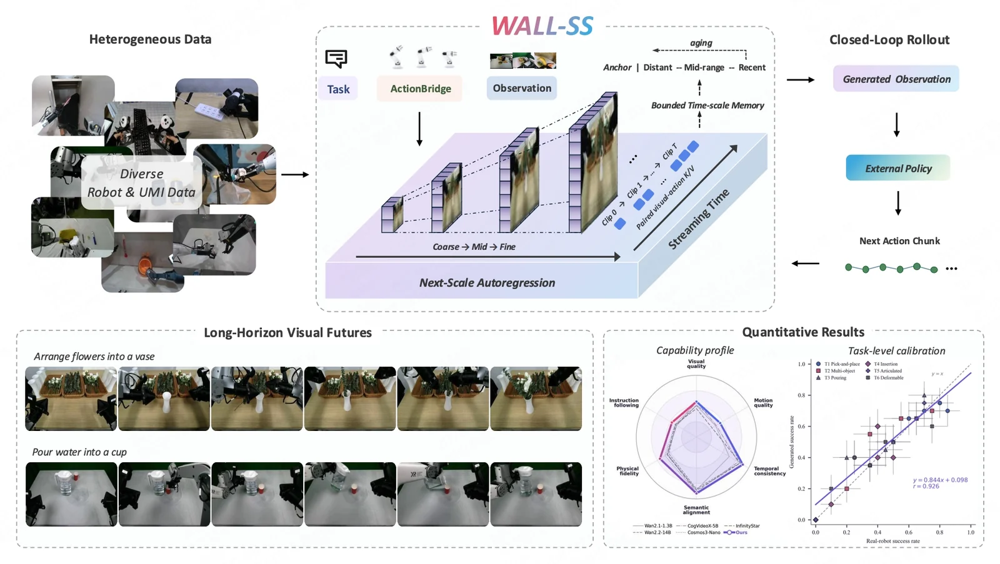
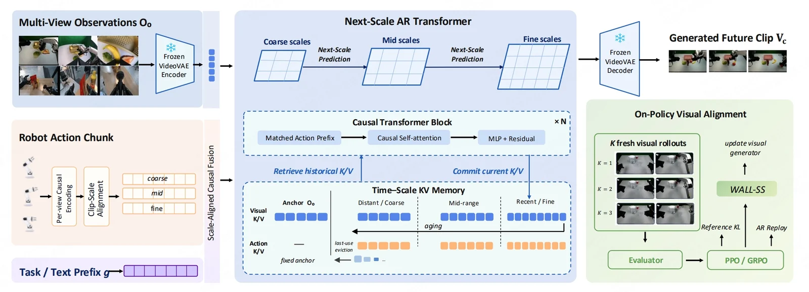

arXiv 2608.26239 · cs.RO · v1 2026 年 8 月 26 日 · 自变量机器人技术报告 · 中文精读
WALL-SS: Scaling Long-horizon World Models via Next-Scale Autoregression
作者 X Square Robot Team（自变量机器人）。核心贡献者 Maeve Zhang、Rain Sun、Xiang Wang、Cyril Zhang、Shalfun Li（项目负责人），通讯作者 Hao Wang；共 25 人，名单见原文第 23 页。
关于这份精读。arXiv 上这篇登记的是默认的非独占分发许可（arXiv.org perpetual non-exclusive license），没有授权转载或翻译。所以这里不做逐字翻译，不放 PDF 里裁出来的任何原图，本地也没有存。每张图用自己的话写画了什么，“看原图”链到 PDF 对应页。
例外是两张来自 GitHub 仓库的图：X-Square-Robot/wall-ss 的 assets/teaser.jpg 和 assets/framework.jpg。仓库是 MIT 许可（LICENSE，Copyright 2026 X Square Robot Team），这两张图属于仓库内容，和论文图 1、图 3 的画面相同（我目视对照，没有逐像素比）。这里只缩放到 1600 px 宽、转成 webp。仓库里的二维码图不放。
标“按原图读数重画”的五张图（图 9、10、11、12、14）不是原图，是我从 PDF 第 18 到 22 页的矢量路径读出数值后自己画的。图 13 改写成表格。
读的是 arXiv v1（2026-08-26 提交，PDF 首页日期写 2026-08-28）。仓库里另附一份 wall-ss-paper.pdf，页边标的是 arXiv 投稿号 submit/7998075、日期 2026-08-26；两份 PDF 抽成文字、去掉多余空格后逐行比较，只有这两处不同。
代码没有发布。仓库提交 04951f5（2026-08-28）只有 README、LICENSE、论文 PDF 和四张图，README 的 TODO 里“Release the training and inference code”没有勾。所以本页没有代码对照，复现要点只能基于论文正文和基座 InfinityStar（arXiv 2511.04675，代码和权重已公开）整理，见 代码与复现要点。
标成“读者注”的框是我核算或对照的结果，不属于论文内容，页尾有汇总。
机器人世界模型：给定当前画面和一串将要执行的动作，预测接下来的画面。它可以当仿真器评估策略、生成数据、做规划。现在的视频世界模型多数一次预测“一段”未来，作者认为这不够：要能按动作写出后果，预测长度可变，能一边交互一边维护世界状态，还要有概率接口好做奖励优化。
读完我认为最值得记住的四点。第一，闭环评估的数字经得起复算：我从图 12 读出 30 个格子的成功率，MAE、偏差、斜率、截距、相关系数、每个任务的 ρ、59 对排序、遗憾值全部和正文、表 3 对上，真机和生成的成功总数（268、285）也正好等于图 13 混淆矩阵的行和列（读者注 15、16、17）。第二，论文几乎没给超参：模型大小、尺度表、记忆预算、各个 λ、K、算力、推理速度全都没写，代码也没发，目前没法照着复现（读者注 7）。第三，图 9 里“完整历史 KV”在三项指标上都比 WALL-SS 的有界记忆好一点，有界记忆换来的是成本，论文没有给出成本数字（读者注 11）。第四，真机图 14 里 Put Ring onto Rod 一项 π0.5 是 74、WALL-SS 是 61，正文“在这些任务上排第一”只对平均成立（读者注 19）。
下面的比较是我对照各页（各页又对照了原文）整理的，不是任何一篇作者的说法。
| 项目 | WALL-SS（本文） | Cosmos Interactive | Cosmos（第一代） | OpenWAM-α | RWM / DreamerV3 |
|---|---|---|---|---|---|
| 预测什么 | 多视角 RGB（经冻结视频 VAE 的离散 token） | RGB 隐帧（以及驾驶的 LiDAR） | 视频隐帧；扩散和自回归两套 | 视频隐帧和动作，同步去噪 | 低维本体状态（RWM）；潜状态（DreamerV3） |
| 一步内怎么生成 | 按尺度逐级自回归，粗到细 | 块因果的扩散，蒸馏到 4 步 | 扩散 DiT，或逐 token 自回归 | 流匹配，视频 DiT + 动作 DiT | GRU / RSSM 一步前向 |
| 动作的角色 | 输入条件（世界模型）；另有动作专家输出动作 | 输入条件 | 后训练时作为条件 | 既是条件也是输出（世界-动作模型） | 输入条件；策略在模型里训练 |
| 长时程 | 按尺度压缩的 KV 记忆 + 锚点，有上限 | 缓存干净的历史块 | — | — | RWM：自回归训练；Dreamer：短想象窗口 |
| 防误差累积 | dream forcing（破坏的和自生成的历史） | 见该页 | — | — | RWM：训练时喂自己的预测 |
| 强化学习用在哪 | 对齐世界模型本身，动作固定 | — | — | — | 训练策略 |
和 Cosmos 系列。WALL-SS 表 1 和图 10 的主要强基线是 Cosmos3-Nano（本站 Cosmos 3 页）；相关工作把 Cosmos 第一代（引 [37]）归为“支持动作条件的递归滚动”的自回归视频模型，把 Cosmos Policy（[28]）归为“用视频骨干同时生成动作、未来状态和价值”。和 WALL-SS 最像的是 Cosmos Interactive：两者都要把视频模型变成能边收控制边出画面的流式模拟器，Cosmos Interactive 走的是“块因果扩散 + 少步蒸馏”，WALL-SS 走的是“逐尺度自回归 + 按尺度压缩的 KV 记忆”。WALL-SS 论文没有引 Cosmos Interactive（后者 2026 年 11 月才出）。另外一个小联系：InfinityStar 的视频 tokenizer 是在 Wan2.1 VAE 上插入 patchify 层改出来的（InfinityStar 原文第 4.1 节），Cosmos-Predict2.5 也直接用 Wan2.1 VAE。WALL-SS 用的是哪个 VAE，论文只写“冻结的 VideoVAE”（读者注 9）。
和复合误差（SuperMimic 问 4、RWM）。SuperMimic 问 4 解释了自回归世界模型的复合误差：每步一点误差，连续滚下去会漂到没见过的地方，所以训练时要喂模型自己的预测。RWM 的“自回归训练”也是这个思路。WALL-SS 的 dream forcing（式 (4)）是同一件事在视频 token 和 KV 记忆上的版本：用一个滞后的模型先生成几段，梯度截断后当历史，再监督下一段干净的真值。区别是 WALL-SS 不让梯度穿过自生成的部分（sg），RWM 和 SuperMimic 是让梯度穿过整条链。
和 Dreamer、OpenWAM。DreamerV3 在潜空间学动力学，再在想象里训练演员和评论家；WALL-SS 直接生成像素级未来，强化学习用来对齐世界模型本身，不训练策略。OpenWAM 研究的是世界-动作模型（视频和动作在一个网络里联合去噪）；WALL-SS 主体是“动作当输入”的正向世界模型，动作专家只是读它的状态。WALL-SS 在相关工作里把同公司的 WALL-WM（[32]）归到“世界-动作表述”这一类。Mundo 是另一条路：显式 3D 代理加 MuJoCo 算物理，视频模型只负责画。
和同公司的 WALL-OSS。WALL-OSS 和 WALL-OSS-0.5 是 VLA 策略模型；WALL-SS 才是世界模型。按论文核对，两者的联系只有一处：第 3.4 节说动作专家“沿用标准的流匹配动作专家（64, 62）”，参考文献 [64] 是“Igniting VLMs toward the embodied space”（arXiv 2509.11766，即 WALL-OSS），[62] 是 Wall-OSS-0.5 技术报告（arXiv 2605.30877）。第 6.5 节闭环评估用的外部策略是“五个 WALL-WM 检查点”（[32]，arXiv 2606.01955），不是 WALL-OSS；论文没有用 WALL-SS 评测 WALL-OSS。反过来，我在 WALL-OSS 和 WALL-OSS-0.5 两份 PDF 里搜 “WALL-SS”、“next-scale”、“InfinityStar”，都没有结果（两者都早于 WALL-SS）。
生成式世界模型想刻画“交互之下经验如何演变”。在机器人里，它不只是视觉仿真器：把看到的、想做的、做了的联系起来，可以给规划、数据生成、策略评估、策略优化提供可复用的预测结构。预测出来的画面让候选动作的后果看得见，学到的动力学也是 VLA 之外理解“动作怎样改变世界”的另一个接口。
作者提的问题是：怎样把高质量的动作条件预测发展成一个“具身轨迹的通用生成模型”。它应当在同一段因果历史里组织动作和后果，支持不同时长和粒度的预测，交互中增量维护世界状态，并且给出概率接口以便做奖励优化。现有系统多以“片段级预测”为核心，其余能力靠各自的专用接口补上。

图 2 对比三种组织方式。作者把机器人世界的演化写成“任务条件 + 时间上交错的观测和动作”的因果序列，每个未来观测由之前的世界历史和中间的动作生成。这样做有四个好处：(1) 统一表示，视觉、语言、动作在同一表示空间和因果结构里；(2) 可变长度，没有固定的预测视野；(3) 流式扩展，增量生成，因果状态可复用；(4) 直接奖励优化，序列概率和 token 对数概率是强化学习的天然接口。同一表示既能做动作条件模拟（未来动作给定），也能做任务导向的想象（动作由当前状态和指令生成）。
三列流程图。(A) 视频扩散：历史帧 → VAE 编码 → 视频去噪器 → VAE 解码 → 未来片段，注“迭代生成”。(B) 动作条件扩散：历史和动作 → VAE 编码 → 条件去噪器 → 解码 → 动作条件片段，注“动作选择一个片段”。(C) 本文的流式动作因果自回归：观测、动作、任务三种 token → 尺度对齐的因果条件 → 逐尺度自回归（Coarse → Mid → Fine 三个小框）→ 时间-尺度记忆 → “Clip 1 → Clip 2 → …”，注“忠于动作的流式滚动”。
代价是自回归的老问题：每个生成的观测都成为后续预测的上下文，小误差会累积。不只是画面漂，还会搞混持久的世界状态、物体身份、交互结果和造成这些结果的动作历史。所以误差累积和长时记忆是这条路线的核心难点。
WALL-SS 受逐尺度预测（VAR 一系）启发，把每个未来分解成一串由粗到细的预测，再在同一框架里做三件事。动作条件的逐尺度预测：在由粗到细的每一级都引入尺度对齐的动作表示，让模型能模拟不同候选动作序列下的场景，包括次优和失败的动作；即使动作违背任务或场景先验，生成结果也要跟着动作走，这样才能表达反事实的后果。按尺度压缩的长时程记忆：记忆和预测用同一套由粗到细的层级，最近的历史细，久远的历史粗，视觉记忆和对应的动作历史一起压缩；再用按尺度的 dream forcing 在被破坏的和自生成的历史上训练，减少暴露偏差。自回归视觉动力学的在策略对齐：把逐尺度的视觉 token 生成当随机策略，在固定动作条件下对新采的滚动用动作跟随和长时一致性奖励优化，用自回归回放和参考模型正则保持预训练的视觉分布。最后在 WALL-SS 和真实世界里闭环运行同一个外部策略，比较长时程任务结果。
三条贡献：第一个基于逐尺度自回归的机器人世界模型（作者原话是“据我们所知”），加尺度对齐的动作条件；把短期和长期记忆的时间层级和逐尺度预测的表示层级对齐，加按尺度的 dream forcing；把逐尺度视觉生成表述成随机策略并在固定动作下做在策略优化，用自回归回放和参考模型正则保持视觉分布。
PlaNet、Dreamer、DreamerV3 学潜空间动力学用于规划或策略学习；V-JEPA 2 学不带动作的预测表示，V-JEPA 2-AC 加上潜空间的动作条件预测做目标图规划。生成式具身模型把未来几何、运动、接触和结果渲染出来，更好检查。控制在不同阶段进入：IRASim 用逐帧对齐的机器人轨迹做条件；UniSim 在高层指令或低层控制下模拟视觉结果；LaDi-WM 预测与视觉基础模型对齐的未来潜状态来引导扩散策略；AdaWorld 从无标注视频学可迁移的潜动作。反方向是把视觉未来翻译成机器人命令：UniPi、RoboDreamer 配逆动力学策略，稠密对应规划从预测帧之间的光流和深度推命令。还有统一预测和控制的一支：Unified World Models、Motus 支持正向、逆向、策略和联合模式；MotuBrain、Causal World Modeling 把视频表示和动作预测耦合；Cosmos Policy 用视频骨干生成动作、未来状态和价值；Cosmos 3 和 WALL-WM 给出多模态或按事件切分的世界-动作表述。作者把自己放在“动作是输入、未来视频是预测目标”的正向预测这一侧。
VideoGPT 自回归地建模离散时空潜变量；Phenaki 用时间因果的 tokenizer 编解码变长视频，配双向掩码 Transformer；VideoPoet、Emu3 把自回归扩展到多模态；Cosmos 支持动作条件的递归滚动。为减少逐 token 解码，NOVA 不做向量量化、按帧或帧组预测，MAGI-1 按时间块生成。逐尺度模型由粗到细预测结构化的 token 图：VAR 在每个尺度内并行；FVAR 用渐进光学重聚焦和高频残差蒸馏抑制混叠；Infinity 加入按位的多尺度残差量化和自我纠正，后面的尺度可以弥补前面的错误；InfinityStar 用“首帧图像金字塔 + 固定时长的片段金字塔”把层级扩展到视频，每个片段在尺度上细化，片段之间按时间自回归，于是有了片段和尺度两条因果轴。
生成概率也方便对齐：DDPO、Diffusion-DPO 用奖励或偏好优化扩散生成器，PhysHPO 针对物理和语义属性；RLVR-World、RLIR、EVA 针对可验证的解码预测、控制与视频的一致性或可执行计划；WorldGym、WMPO 用学到的动力学做策略评估或优化。作者说本文“直接在选定的、对动作敏感的尺度上优化视觉 token 分布，使用动作、转移和任务进度反馈”，并用似然回放和参考正则保持细节外观（这句和第 3.5、5.2 节有两处对不上，见读者注 6）。
长视频模型在近期和持久上下文之间做不同取舍：StreamingT2V 保留外观锚点，FramePack 压缩较早的帧，LongLive 用局部窗口加帧汇（frame sink），VideoSSM 加循环状态空间记忆。它们都让近期运动的分辨率高于长期外观。结构化记忆的做法：Long-term Spatial Memory 用几何地图和情景帧，StableWorld 过滤历史，Echo-Forcing 组织有界的锚点、历史和窗口缓存，Echo-Infinity 整合被逐出的 KV。另一条线处理暴露偏差：教师强制训练用干净历史、推理用自己的预测；Diffusion Forcing 用独立加噪的真值 token 训练，覆盖各种上下文噪声但不直接暴露模型自己的滚动误差；Self-Forcing、Rolling Forcing、Resampling Forcing 分别用自生成滚动、在自生成历史上训练的滚动窗口、自重采样的退化历史，更直接地对齐训练和推理。
视觉生成器从 InfinityStar 初始化。给定初始多视角观测、任务指令和时间对齐的控制，模型推进物理时间，每个同步的未来从粗的潜结构构造到细的残差细节。一个确定性的对齐接口把控制投影到各相机的时间线上，尺度对齐的因果掩码只暴露当前视觉区间对应的动作。为支持递归滚动，模型把同一层级里形成的因果状态复用为流式记忆：近的留细尺度，远的留粗尺度，初始观测作为持久锚点。生成器有显式的自回归概率，所以还能在自己的滚动上用动作跟随和长时一致性反馈对齐。第 3.2 节讲表示和动作对齐，第 3.3 节讲记忆，第 3.4 节讲动作专家，第 3.5 节讲对齐。

作者的出发点：视觉先验能生成看起来合理的未来，却可能没用好那些和场景、指令相关的控制。所以动作要注入到构造每个未来状态的因果决策里，而不是当一个全局提示。
逐尺度视觉表示。每个尺度在前面各尺度累积重建的基础上预测残差视觉码。匹配的动作在整个由粗到细的过程中都可见。一个残差跨视角适配器只交换因果上已经可用的同步状态，让所有相机共同约束同一个转移，而不需要按相机排自回归顺序。
动作-视频时间对齐。对每个相机 v，一个确定性渲染器 R(v) 把规划侧的轨迹（从滚动状态 p0 起）投影到视觉时间线上。它只用给定的控制和标定，从不用实际执行的未来遥测或目标视频。一个共享的因果编码器连续处理这条流，再按 RGB 用的同一组片段区间 Jc 切片，既保留时间连续，又保留片段级对齐。编码器为每个视角产生连续特征流；对齐到区间 Jc 的特征在保留的动作尺度集合 SA 上投影，汇成同步条件 XAc,j。对视觉尺度 ℓ，κ(ℓ) 选不超过 ℓ 的最细保留动作尺度。这个读取时的选择不在时间上池化动作，也不混合不同片段的控制。
尺度对齐的因果条件。动作 token 作为条件前缀放在同一条 Transformer 序列里。位置 (c, ℓ, r, v) 的查询（片段 c、尺度 ℓ、残差重复 r、视角 v）读文本，并只读块对角动作图里的 (c, κ(ℓ), v)；其他视角、相邻片段和未来的控制都被屏蔽。身份锚点只代表 O0。跨视角交换只作用于同步的因果视觉状态，不改动这个直接的动作掩码。
自回归目标。设 Nc,ℓ,r 是屏蔽掉不可用相机位置后有效视觉决策的个数。在和推理相同的因果顺序下，最小化平衡的负对数似然：
Bal 在片段、尺度、残差重复之间均匀平均；一个“束”的对数概率是对有效 token 决策求和。没有可靠动作的样本，动作条件置为 ∅。
只留最新的片段会丢掉持久状态；留下全部 token，记忆随滚动长度增长。作者的做法是把逐尺度层级按时间倒过来用：近的片段保留更细的因果状态，老的保留更粗的。这些状态在生成时就顺手存下，不需要单独的记忆编码器，也不在 RGB 空间压缩。
时间-尺度记录。在每个保留的“预测前边界” s ∈ SM，把该边界的目标被观测之前的同步因果状态 Hpreu,s 物化下来。s 越大，包含的累积前缀越细。每个状态和同一物理区间的动作库 Au = {XAu,j}j∈SA 配对：
δ 是片段年龄，WM 是固定的保留视野。单调的调度 s(δ) 让近的记录细、远的记录粗；“变老”只改变读哪个预先算好的边界，不在线转换 KV。
以身份为锚、按距离保留。持久锚点 Hanc 只来自 O0，稳定身份和全局布局，不含任何未来动作，也不代替当前的动态状态。滚动记录携带中间状态，每条视觉记录都和同一区间的动作条目配对。
有界的记忆库。记忆库包括活跃记录和等待以后使用的预算记录，每条在最后一次计划读取后逐出，所以固定的年龄-尺度调度给出
于是持久历史和单片段工作记忆都和已完成的片段数无关。
流式状态转移。片段 c 之前，模型组装 \(\mathcal M_c\)，编码当前动作块，由粗到细生成所有同步视角。只有整个束提交之后，保留的状态才变成持久的；然后状态机让记录变老、改变活跃截断、逐出过期条目，再进入片段 c + 1。
按尺度的 dream forcing。干净的教师强制不会让模型见到递归滚动中存下的误差。所以把按年龄的破坏 \(\widetilde{\mathcal M}_c\sim\mathcal C_{\mathrm{age}}(\mathcal M_c)\) 和一个由滞后流式模型采样、梯度截断的后缀结合起来：
记 \(\mathcal L_{\mathrm{cor}}\) 为用 \(\widetilde{\mathcal M}_c\) 代替 \(\mathcal M_c\) 的目标，完整目标为
所有分支都预测干净的未来，只改变因果历史；所以 dream forcing 是有监督的“暴露差距”训练，不是奖励优化。
SM 有几个边界、s(δ) 怎么随年龄下降、WM 多大、BKV 是多少 token 或多少显存、锚点占多少，正文、图注都没有。dream forcing 的 λcor、λself、后缀长度 d、“滞后模型”滞后多少步、\(\mathcal C_{\mathrm{age}}\) 用什么破坏（丢 token、加噪、换成别的片段？）也没写。图 3 里锚点画 5 格、远 / 中 / 近的视觉 KV 分别 5、5、7 格，只是示意。所以“有界”在本文只是式 (3) 的形式保证，具体多大、和“完整历史”相比省多少，没有数（另见读者注 11）。
上面的视觉模型预测“动作怎样改变世界”。作者再配一个一起训练的动作专家。在块 c 之前，它读 \(H^A_c=F^A_\omega\big(\mathrm{Read}_V(\mathcal M_c),\ E_s(s_c),\ \mathcal T_g\big)\)，sc 是当前本体状态或规划侧状态，ReadV 只暴露已提交的视觉状态。照标准的流匹配动作专家（[64] WALL-OSS、[62] WALL-OSS-0.5），带噪的动作槽交叉注意这个上下文，预测下一个控制块 Ac。掩码排除当前视觉目标、当前动作条件和所有未来记录。可执行轨迹 Ac 和视觉条件 XAc 不是一回事；预测的动作和外部动作走同一个对齐映射 \(\hat X^A_{c,j}=\Gamma_j(\hat A_c,s_c)\)，视觉模型从不读动作专家的私有状态。递归想象时交替做“动作预测 → 视觉生成 → 记忆提交”；真机部署时 sc 用测得的本体状态更新。在成对的教师强制转移上，两支读同一个动作前记忆 \(\mathcal M_c\)，示范动作既是专家的目标，也是它对应视觉后果的条件：
\(\mathcal L_{\mathrm{act}}\) 沿用所引动作专家的目标，只用于成对的教师强制历史；不成对的历史只有视觉损失。
对齐的是自回归视觉生成器，不是机器人控制器。控制是固定条件，优化只在它们之下重新分配视觉未来的概率。
把视觉生成器当策略。记 ξn 为第 n 个视觉 token 决策时的离散前缀、条件、掩码和记忆地址。固定的采样变换给出 \(\pi^V_\theta(\cdot\mid\xi_n)=\mathcal S_\eta[p_\theta(\cdot\mid\xi_n)]\)。对每个 x = (O0, A1:C, g)，一个冻结的行为副本采 K ≥ 2 条轨迹，解码后打分。同组样本共享同样的给定控制，所以“在策略”只指视觉生成策略。
动力学保真奖励。两个冻结打分器评估解码后的滚动：Ract 衡量每个转移和给定动作是否一致；Rlong 在一个滚动窗口上衡量状态、边界和跨视角的一致性。记 bc = max(1, c − W + 1)，\(\hat V^i_0=O_0\)：
任务进度和最终成功不进奖励，留给闭环评估。
组相对的策略优化。把片段奖励折扣累加成 \(G_{i,c}=\sum_{u=c}^{C}\gamma^{u-c}r_{i,u}\)，在 K 条滚动之间归一化得到 \(\hat A_{i,c}=\mathrm{sg}[(G_{i,c}-\mu_c)/(\sigma_c+\epsilon)]\)，即不用学评论家的组相对基线。对 token zi,n：
\(\mathbb E_{\mathrm{bal}}\) 用同样的片段-尺度平衡；奖励不回传，梯度走采样到的视觉 token 的对数概率。
保先验的正则。用冻结的参考生成器 \(\pi^V_{\mathrm{ref}}\) 和真实轨迹的自回归回放约束策略漂移：
KL 限制局部漂移，\(\mathcal L^{\mathrm{real}}_{\mathrm{AR}}\) 保持真实轨迹的外观、防止钻奖励的空子。只更新视觉生成器和它的条件适配器。
K（只说 ≥ 2）、γ、ε（PPO 裁剪）、ϵ、β、λAR、λact、λlong、W、每次对齐迭代用多少组、多少次更新后刷新滚动（第 5.2 节只说“有界次数”），全都没写。两个打分器的结构和训练数据规模也没写，只在第 5.2 节说了负样本怎么造：动作打分器用时间平移、倒放、跨轨迹的动作做负例；长时打分器用拼接、漂移、视角不同步的序列做负例。式 (8) 的 KL 是对全词表算还是用采样估计（InfinityStar 用按位的 BSQ，词表可达 264，按位分解后才好算）也没说，这是我推断出来的实现难点。
3D 框架动画 · 11 幕
从“任务、O0、动作块、画面片段”交错的因果序列开始，依次是由粗到细的残差金字塔、动作投影成动作视频并按尺度取用、尺度对齐的块对角掩码、数据路由、时间-尺度记忆（可切换完整历史 / 只留最近 / 按尺度压缩）、dream forcing 三个分支、图 9 读数、在策略对齐（当场算组内优势）、流式闭环和图 12 散点、动作专家和真机图 14。论文没给数字的部分都标了“示意”。
数据要支撑三件事：动作条件的未来预测，文本加首帧条件的视频生成，用于策略学习的过程价值估计。分三部分：(i) 公开机器人数据，以完整的 AgiBotWorld-Beta（论文）为主；(ii) 自采的 X2-Robot 数据和无本体的 UMI 数据；(iii) 策略介入和失败恢复轨迹。公开数据给任务、场景、本体的覆盖；自采数据缩小和部署环境的视觉、动作、相机差距；介入数据在接触密集的瓶颈处补充偏离标称的转移。作者引 GigaWorld-1 说明：宽泛的视觉-物理先验和本体特定的可控性互补，标称和非标称交互都要有。
数据接口按“有什么模态就监督什么”：动作条件要求时间同步的机器人状态和控制，加上有效的相机内参、外参和运动学变换。缺标定的样本不丢，只要视频有效就留在视频生成池，贡献视觉动力学、时间结构和语言对齐，但不带动作条件。
三栏。左“互补的数据来源”：公开机器人数据、自采数据、无本体 UMI 数据各一组照片；“介入与恢复数据”画了一条流程：策略执行 → 观察到错误 → 回滚 / 对齐 → 人接管 → 纠正后的未来。中“可靠的整理”：四步检查（视频完整性、时间对齐、标定与运动学、结果感知的过滤），然后标准化成语义片段（共享 RGB 和状态时间戳），再按可靠模态路由：有标定动作的进动作条件池，否则只进视频池。右“监督池”：动作条件池（头部 RGB 和与图像对齐的动作渲染，例子标 ArtiXon Arm 和 AgiBotWorld-Beta，用于未来预测、视频生成、价值估计）；纯视频池（只用于视频生成）。图注说片段统一到 10 FPS。
公开机器人数据。主要是 AgiBotWorld-Beta：1,003,672 条轨迹，100 多台机器人，100 多个真实场景。用全量发布，覆盖多样的本体、物体、场景、交互和任务时长。经语义切片和语言标注校验后，这部分有 987,508 个带描述的片段，来自 165,560 个不重复的源视频。另加 ManipArena（同公司参与的真机评测基准，我没找到独立主页）的真机操作示范，补推理型和接触密集的任务。
自采数据。X2-Robot 示范在目标观测几何下采集，包含多样的双臂操作。同步和标定检查通过时，提供机器人状态、双臂末端运动、夹爪状态和多视角视频，缩小本体差距和相机域差距。
无本体 UMI 数据。用便携手持夹爪（照 UMI）采集，扩充第一视角的手-物交互，不占机器人。采集设备和相机完全标定时，运动转换成和机器人一样的标准末端表示；否则只当普通具身视频用，不给不可靠的动作条件。
策略介入和恢复数据。单独作为一部分，不匿名混进标称示范。记录策略执行、人工纠正和之后的交互，覆盖不完美策略常到达而专家遥操作少见的状态：没抓到或不稳的接触、错位、重抓、多次尝试、纠正动作。
标准示范强烈依赖“成功”：从有效的复位开始，接近标称的动作，达成目标才保留。这对模仿学习高效，对世界模型不完整。接触附近，同样的高层意图会因毫米级的几何、摩擦、柔顺和夹爪时机产生完全不同的结果。如果训练集里几乎每次合夹爪之后都是成功抬起，生成模型会学到“抓就等于粘上”的捷径，即使有明显空隙也把物体移进夹爪，出现像磁铁一样的抓取。
介入数据有两种。即时介入：发现错误或不安全趋势，操作员立刻接管，从当前策略状态继续，覆盖部署策略真正访问的状态。回滚重放介入：保留错误的执行，把系统带回出错前的状态，操作员从回滚点执行纠正动作。这样同一场景、任务、机器人条件下有一条错误分支和一条人工纠正分支，构成很难的动作条件对比：模型无法只靠场景或任务先验解释两种未来，必须解释腕部运动、接触几何和夹爪时机的差别。物理回滚不能精确复现物体位姿、接触和柔顺，所以两条分支只当“局部匹配”的例子，不当严格反事实；需要直接比较时，用回滚点附近的同步状态和视觉上下文检查一致性。
这些轨迹教三件标称示范说不清的事：意图不等于效果（夹爪合上但没接触，物体就不动）；失败会改变之后的动力学（滑落、移位、半抓的物体是新状态）；纠正本身是有结构的行为（后退、回滚、重新对齐、重抓）。同样的数据也给过程价值和奖励学习提供局部时间顺序：失败和介入的边界标出进度下降、纠正开始的区间；有可靠的恢复终点或最终结果时，再监督纠正是否恢复了进度。局部失败区间不等于整回合失败，接管片段本身也不当成恢复成功的证据。保留非标称结果不放松质量控制：真实的没抓到、掉落、碰撞、重试、回滚、重抓都是有效的物理转移，保留；损坏的视频、时间戳错误、无效的机器人状态、标定漂移是传感或记录错误，剔除或降级为纯视频监督。
原始数据在帧率、相机布局、回合结构、动作表示和标定可用性上都不同。统一成保留来源的回合格式，经过完整性校验、时间重采样、语义切片、按标定路由监督、动作标准化和投影、离线潜变量缓存。
完整性校验和结果感知过滤。检查帧可解码、分辨率和帧率元数据、时间戳单调、多视角一致。剔除不可读帧、重复帧塌缩、帧和动作长度严重不匹配、缺机器人状态、控制记录不单调、运动学无效的片段，另查曝光异常、严重模糊、压缩损坏、相机不连续、回合截断。这些检查针对采集失败，不针对任务失败：等待、保持、接触稳定这类低运动区间保留，明确的失败尝试、回滚、介入、恢复动作也保留。
时间重采样和切片。以语义子任务为基本单元。每条记录存源视频、子任务起止索引、源帧率和分辨率、语言描述、结果和介入标签，以及到动作和标定元数据的链接。长录像在任务或子任务边界切开，每个片段表达一次连贯的操作尝试；介入片段保留足够的出错前、纠正、回滚上下文。
按标定路由。记 \(m^{\mathrm{cal}}_i\in\{0,1\}\) 表示样本 i 是否通过时间戳、相机内参、外参和机器人运动学检查：
v、a、l 分别是视频、动作、语言。两个子集都训练视频预测，只有 Dac 提供投影的动作条件。RGB 有效但动作同步或投影失败的样本也降级到 Dvid，不带着错位的控制被悄悄使用。
动作标准化和投影。标定过的机器人和 UMI 录像，先把各种动作转换成统一的末端表示：左右腕的位置和朝向写成齐次变换，夹爪开度归一化到有界标量。相机外参把每个末端映射到头部相机坐标系，内参随 RGB 的保宽高比缩放和裁剪一起更新。末端关键点 xe 的像素坐标：
Kh 是缩放后的头部相机内参，Th←e 是从末端到头部相机的复合变换；无效或在相机后方的投影被屏蔽。左右末端的投影轨迹在主视角平面上渲染成空间对齐的“动作视频”：每帧画末端中心和局部坐标轴，颜色区分两只手并编码夹爪状态，标记大小反映到相机的深度。这样低维控制流变成和 RGB 共享时间戳、空间变换和张量布局的视频状条件；没有有效的投影链就不构造动作视频。
潜变量缓存和来源。冻结的视频 VAE 把 RGB 片段和（如有）投影动作视频编码成时间对齐的潜张量。缓存前检查两者的帧索引和空间形状完全相同。缓存键是源视频、标注区间、目标帧率、缩放裁剪配置和表示版本的确定性函数。训练时再查一次缓存存在性和张量约定，不退回到未验证的在线特征提取。每条记录保留来源、标定状态、介入和结果标签、质量标记、处理过程，便于按来源采样和事后审计。
第 4.3 节说动作渲染成主视角平面上的动作视频，再用冻结视频 VAE 编码缓存。第 3.2 节说对每个相机 v 有渲染器 R(v)，再用一个共享的因果动作编码器处理，按片段区间切片、按动作尺度投影；图 3 也画了“逐视角因果编码”。所以腕部视角的动作视频是否也渲染、动作编码器是 VAE 还是另外训练的因果编码器、两者是不是串联（VAE 潜变量再进因果编码器），论文没有说清。我的推断是：VAE 先把动作视频编码成潜张量，因果编码器再在潜张量上工作。另外动作视频用的是头部相机的标定，腕部相机随手臂运动，同样的投影要逐帧算腕部外参，论文没提。
两半。(a) 视觉生成器的在策略对齐（标“新滚动；给定动作保持固定”）：固定条件 O0、g、A1:C 进入 ARWM θ（视觉策略，标 UPDATED），产生 K 条新的自回归未来，交给冻结的打分器（动作保真、滚动一致性），得到相对的分数，做组归一化更新；左下有参考 KL。(b) 仿真-真机闭环评估（标“只评估，全部冻结”）：同一个外部策略检查点分别和 ARWM 滚动（得到 Ôc+1）和真实机器人（得到 Oc+1）交互，比较策略排序、成功率校准、回合一致性。
从 InfinityStar 初始化，训练分三段：动作对齐的自回归学习，抗滚动的长时程适配，视觉动力学的在策略对齐。推理和训练用同样的逐尺度顺序、动作对齐和流式记忆转移。
动作对齐的自回归学习。在第 4 节的缓存潜变量上训练。视觉 tokenizer 冻结，自回归生成器和它的动作、视角条件模块一起优化。标定过的样本给动作条件；没有可靠动作的样本保留视觉似然监督，动作条件缺省。同步的相机流构成一个多视角预测束，不可用的视角从似然里屏蔽。这一段先用干净的真值上下文优化逐尺度似然，每个未来片段配对应的动作块，初始观测编码成不带动作的身份锚点。动作专家在成对转移上一起训练，没有有效动作目标的样本只有视觉损失。
抗滚动的长时程适配。然后在连续的多片段窗口上继续训练，打开有界时间-尺度记忆。干净的教师强制历史、按年龄破坏的历史、截断梯度的自生成后缀混在一起。自生成上下文由滞后模型走推理时同样的流式转移产生，监督总是来自干净的未来片段（即 dream forcing 的目标）。
图 5 区分两件事：用奖励优化自回归视觉生成器（只在给定动作下更新视觉动力学），以及用冻结的外部策略做闭环评估（既不优化控制器也不优化模拟器）。
先训打分器。动作打分器对比匹配的控制和时间平移、倒放、跨轨迹的动作；长时打分器对比真实的连续窗口和拼接、漂移、视角不同步的序列。训完冻结，只提供视觉动力学保真的奖励。
视觉策略优化。每次对齐迭代，一个刚冻结的行为副本从同一个已提交的流状态、在同一动作序列下采一组新滚动；解码后打分，把组相对回报分给采样的视觉决策，当前模型重算它们的 token 概率来优化目标。所有逐尺度因子都参与，token 归一化保持平衡。tokenizer、打分器、参考生成器和任何产生动作的模块都固定；更新自回归生成器和条件适配器；有界次数的策略更新后刷新滚动批。
动作条件流式生成。给定初始同步观测、任务指令和一串控制块，身份锚点只构造一次，然后逐个生成未来片段：因果编码当前动作块，按由粗到细的逐尺度顺序采样同步视角，提交完整的束，推进有界记忆，再解码下一个观测。该片段提交的状态作为下一步的条件。从同一个已提交状态分叉，给不同的控制或随机种子，就得到独立的反事实未来。
闭环滚动。冻结的外部机器人策略读最新生成的同步多视角观测和任务指令，返回下一个动作块。一个轻量的动作桥把策略的块转换成模型的控制条件（重采样到训练时的控制频率和末端表示），WALL-SS 生成下一组头部和两个腕部视角，经流式状态转移提交，再把观测交还同一个策略。初始化之后不注入任何真值观测或动作，生成器和外部策略在评估中都不变。
我在全文里搜了 GPU、batch、learning rate、step、parameter、resolution、FPS、seconds 等词，能找到的配方数字只有：数据统一到 10 FPS（图 4 注），K ≥ 2（第 3.5 节），评估滚动到 60 秒，FID / FVD 用 3 秒窗口。下面这些都没有：
评估协议。把 WALL-SS 当自回归的具身视频生成器：给初始观测和语言指令，自回归滚出对应的未来视频，要保持物体身份、机器人运动和长时一致性。按 WorldArena（论文）的协议，评视觉质量、运动自然度、时间和语义一致性。
基准构建。从自己的“泛化具身数据混合”里建一个具身视频生成基准：200 个分布内任务、100 个分布外任务，覆盖多样的物体、场景、视角、本体、动作动词和恢复行为。分布外部分针对语言和组合泛化：新的物体-动词组合、改写的指令、没见过的场景配置、组合任务。80% 的样本带同步控制轨迹用于动作条件评估，其余 20% 是文本加图像生成视频。
主要结果。表 1：WALL-SS 全面超过它的基座 InfinityStar，并在具身相关的维度上整体最强，包括运动质量、时间和语义一致性、物理和条件保真。作者认为具身训练加上尺度对齐的动作条件和长时程训练配方，把继承来的视频先验变成更强的物理先验。图 6 定性显示通用视频模型更容易出现运动和交互漂移。
表 1（第 15 页，看原表 ↗）：具身视频生成的定量评估，全部越高越好。加粗是每列最大值（我按数字标的，原文的加粗和下划线在抽取的文字里看不到）。
| 模型 | 视觉质量 | 运动质量 | 时间与语义一致性 | 物理与条件保真 | ||||||||||
|---|---|---|---|---|---|---|---|---|---|---|---|---|---|---|
| 图像质量 | 美学 | 动态程度 | 光流分 | 运动平滑 | 主体一致 | 背景一致 | 语义对齐 | 交互质量 | 透视 | 指令跟随 | 轨迹精度 | 深度精度 | 动作跟随 | |
| InfinityStar | 0.602 | 0.321 | 0.253 | 0.044 | 0.601 | 0.803 | 0.879 | 0.860 | 0.484 | 0.768 | 0.406 | 0.251 | 0.749 | – |
| Wan2.1-1.3B | 0.679 | 0.345 | 0.329 | 0.098 | 0.672 | 0.608 | 0.650 | 0.856 | 0.452 | 0.858 | 0.380 | 0.197 | 0.715 | – |
| Wan2.2-14B | 0.690 | 0.337 | 0.427 | 0.181 | 0.793 | 0.803 | 0.862 | 0.836 | 0.476 | 0.836 | 0.394 | 0.159 | 0.657 | – |
| CogVideoX-5B | 0.718 | 0.429 | 0.308 | 0.143 | 0.686 | 0.776 | 0.823 | 0.890 | 0.400 | 0.900 | 0.380 | 0.177 | 0.774 | – |
| Cosmos3-Nano | 0.693 | 0.439 | 0.425 | 0.208 | 0.701 | 0.861 | 0.897 | 0.903 | 0.516 | 0.874 | 0.410 | 0.202 | 0.816 | 0.044 |
| WALL-SS | 0.697 | 0.453 | 0.435 | 0.213 | 0.715 | 0.873 | 0.903 | 0.912 | 0.546 | 0.885 | 0.471 | 0.539 | 0.831 | 0.290 |
两个任务并排：左“按形状分拣物体放到对应区域”，右“从水壶往杯子里倒水再放下”。每个任务三列快照：t = 5 s、30 s、60 s。四行：Wan2.1-1.3B、Wan2.2-14B、Infinity-8B、本文。图注说这张图比较各模型在长时程上保持场景几何、物体身份和任务连贯推进的能力。注意这里的基线写的是 “Infinity-8B”，不是表 1 的 InfinityStar（读者注 9）。
分析。运动动态、语义一致、交互质量、轨迹精度、深度精度的提升，作者归因于大规模具身训练和动作对齐、长时程训练配方，并认为数据混合的多样性（任务、恢复行为、物体、本体、视角、语言）起了作用。在组合分布外部分，语义对齐和指令跟随分数说明它能更可靠地跟随改写和组合的指令。
我读了 InfinityStar 原文（arXiv 2511.04675，NeurIPS 2025）和代码仓库 README（FoundationVision/InfinityStar，MIT 许可，代码和检查点公开）：
评估协议。额外给一条同步的控制轨迹，指定不同空间范围、贯穿整个预测视野的运动。照 WorldArena 报告动作跟随（Action Following）和轨迹精度（Trajectory Accuracy）：前者看同一视觉上下文下不同动作条件能否产生可区分的结果，衡量对控制分支的敏感度；后者看生成视频里实际实现的机器人运动和参考轨迹在时空上是否一致。
分析。表 1 里两项都好：动作跟随高说明换动作会得到实质不同的未来，不只是围绕同一个场景延续的外观变化；轨迹精度高说明这些差异和预期运动对得上，生成的末端沿给定方向和时间演化。作者还说视觉对动作的注意力主要集中在活动夹爪、被操作物体和附近交互区，并随操作推进一致地移动，和尺度对齐条件把动作信息送到负责局部运动和接触的视觉 token 这一设计一致（这段没有配图或数字）。
反事实滚动。左边是共享的初始帧 T0（桌上有物体，机械臂在上方），图例说蓝色曲线是动作条件、橙色曲线是预测轨迹。右边三行分别是动作条件 1、2、3，每行四张快照 T20、T40、T60、T80，画面上叠着末端路径。三行从同一画面出发，夹爪往不同方向移动。图注：蓝、橙分别是给定的和实现的轨迹。
动作条件的反事实推理。固定初始观测和语言指令，只改未来的控制轨迹，构造反事实分支（图 7）。蓝色虚线是给定的末端路径，橙色是从生成滚动里恢复出的实际轨迹。作者认为介入丰富的训练数据支撑了这种能力：接管和恢复片段提供替代和纠正的延续，失败轨迹防止模型塌缩到过于乐观的成功未来。
评估协议。短片段质量不能说明模型把自己的预测递归提交为上下文之后是否还可靠。所以在“按时间分段的重放”协议下评估长时程动作条件生成，滚到 60 秒。各模型从同一同步多视角观测出发，接收同一给定控制序列；初始化后每个片段都自回归生成并经流式状态转移提交，真值未来帧从不回喂，只作为评估参考。
上排：一次连续倒水滚动的六张关键帧 T0、T20、T40、T60、T80、T100，下面写着开始、接近瓶子、抓起、倒水、倒完、放回；三个事件框（接近瓶子、倾倒到杯子上方、倒完）。左下：标题“轨迹跟随误差随滚动的变化”，横轴“归一化滚动进度（%）”0 到 100，纵轴“位置误差（图像对角线的 %）”0 到 1.75；画了原始逐帧误差（灰虚线）、平滑误差（蓝到粉的渐变线）和局部波动带，三条竖虚线大约在 16%、48%、79%。平滑曲线开头约 1.35%，16% 附近降到约 0.7%，20% 到 35% 约 0.9%，40% 后掉到约 0.3%，48% 到 79% 稳在 0.4% 到 0.5%，79% 之后升到约 1.0%，结尾约 1.4%（位图，我目测）。右下：“全局轨迹”，相对像素坐标，动作条件（蓝虚线）和生成轨迹（实线）从 (0, 0) 共同起点向左上延伸到约 (−200, 270)，中段（约 x = −100、y = 100 到 160）两线分开最多。
图注写的是“在接触密集的倒水阶段，逐帧轨迹跟随误差保持在图像对角线的 0.5% 以下”。按图看，平滑误差只在约 42% 到 79% 的进度区间（倒水那一段）低于 0.5%；接近瓶子和放回瓶子两段在 0.7% 到 1.4% 之间。原始逐帧误差（灰虚线）在倒水段里也有个别点接近或略高于 0.5%（目测，位图读不准）。所以图注的限定词是必要的，不能读成“全程低于 0.5%”。这张图只有一次滚动，单位是“% 图像对角线”，和图 9 的“归一化指标”不同。
流式滚动可视化。图 8 的给定路径在连续生成的片段间传递，实际末端轨迹和交互状态从滚动本身测量。作者说和“只留最近片段”的基线相比，时间-尺度流式模型的轨迹误差积累少得多，全程贴近给定的全局路径（图 8 本身只画了一条滚动，对比见图 9）。
和完整模型对比三个受控的记忆变体：不做 dream forcing（推理记忆机制相同，但训练不用自生成上下文，隔离对模型自生成历史的鲁棒性）；只留最近片段（丢掉远处记录，只以最新生成状态为条件，隔离长程保留的贡献）；完整历史 KV（所有历史视觉状态以统一精度保留，是偏重质量的参照，记忆和注意力成本随滚动时长增长）。
三个小图，横轴滚动时间 0 到 60 秒，纵轴“归一化指标”。(a) 末端轨迹误差（越低越好），(b) 跨片段边界误差（越低越好），(c) 持久状态一致性（越高越好）。四条线：本文（粗的渐变线）、完整历史 KV、不做 dream forcing、只留最近片段，后三条是灰色系，各带一条半透明的带。四条线在 0 秒都从同一点出发。下面是按原图读数重画。
按原图读数重画 · 图 9 · 从 PDF 第 18 页矢量路径读出，按原图刻度标定，每 2.5 秒一个点；半透明带没有画。有几处缺点（50 s、27.5 s、12.5 s、30 s），是绘图时合并了共线线段。可悬停看数值。
60 秒时的读数（图 9 原图没有标数字，下表是我的矢量读数）：
| 设置 | (a) 轨迹误差 | (b) 边界误差 | (c) 状态一致性 |
|---|---|---|---|
| 本文（时间-尺度记忆） | 0.187 | 0.126 | 0.810 |
| 完整历史 KV | 0.136 | 0.106 | 0.844 |
| 不做 dream forcing | 0.486 | 0.510 | 0.495 |
| 只留最近片段 | 0.816 | 0.638 | 0.309 |
“完整历史 KV”在三项上都比有界记忆好一些（差 0.05、0.02、0.03），论文把它定位成“偏重质量的参照”，承认它更好，代价是记忆和注意力随时长增长。但论文没有给两者的显存、速度或 token 数对比，所以“有界记忆值不值”这件事没有数据。dream forcing 的贡献最大：去掉它，三项在 60 秒时分别差了 2.6 倍、4.0 倍和 0.61 倍。另外“完整历史 KV”这一行有没有做 dream forcing 训练，正文没说；从它的曲线比“不做 dream forcing”好得多看，应该是做了（我的推断）。
三个小图，横轴滚动时间 3 到 60 秒。(a) PSNR（越高越好，纵轴 14 到 24），(b) FID（越低越好，50 到 350），(c) FVD（越低越好，100 到 350）。五条线：本文（渐变线，起点蓝点、终点粉点）、InfinityStar、Wan2.1、Wan2.2、Cosmos3。所有模型的 PSNR 在前 10 秒左右快速下降，FID、FVD 快速上升，然后变缓；本文全程 PSNR 最高、FID 和 FVD 最低。下面是按原图读数重画。
按原图读数重画 · 图 10 · 从 PDF 第 18 页矢量路径读出，按原图刻度标定，每 1 秒一个点（3 到 60 秒）。可悬停看数值。
动作、状态、边界的保持。图 9 把一个感知分数会混在一起的三种失败分开：轨迹误差是跟踪生成的末端，用归一化动态时间规整和参考控制轨迹对齐后得到；持久状态一致性在每个滚动窗口内评估机器人位姿、被操作物体、接触关系和任务相关的物体状态；跨片段边界误差在每个提交边界附近，用以机器人和物体为中心的运动轨迹计算，暴露平均指标会掩盖的跳变。
感知质量随时间的退化。按经过的滚动时间报告质量，强的开头掩盖不了后期的身份崩塌或纹理累积。PSNR 用时间对齐的生成-参考帧对算；FID 和 FVD 在共同的保留集上按连续 3 秒窗口算；曲线做 3 窗口滑动平均，汇总比较用原始窗口分数。
跨视角一致性。长时稳定要针对同一个物理状态，不是每个相机各自稳定。评估同步的三元组（一个头部、两个腕部相机）：冻结的线性探针衡量能否从生成表示中恢复 3D 结构，标定后的点匹配衡量跨视角对应误差（像素）。图 11 每个点汇总所有有效同步窗口；左下角要求既有可解码的空间结构又有跨视角一致，排除“每个相机各自看起来合理、但机器人或物体状态互相矛盾”的失败。
散点图。横轴 3D 探针误差（0.025 到 0.060，越低越好），纵轴跨视角对应误差（像素，40 到 140，越低越好）。灰点标着 CogVideoX、Aether、Wan2.1-1.3B、Open-Sora 2.0、Wan2.1-14B、V-JEPA、DINOv2，本文是一个带光晕的紫点，在左下方。图注：本文两项误差都低，说明表示是 3D 感知、视角一致的。下面是按原图读数重画。
按原图读数重画 · 图 11 · 从 PDF 第 19 页矢量路径读出，按原图网格线标定。点的位置是标记中心。可悬停看数值。
读数：本文 (0.027, 55 px)；Wan2.1-14B (0.028, 78)；Wan2.1-1.3B (0.037, 107)；Open-Sora 2.0 (0.039, 100)；V-JEPA (0.044, 68)；CogVideoX (0.049, 140)；Aether (0.050, 119)；DINOv2 (0.056, 49)。本文 3D 探针误差最低，但 Wan2.1-14B 几乎一样；跨视角对应误差最低的是 DINOv2（约 49 px 对 55 px）。所以“左下角”的说法大致成立（没有哪个点两项都比本文低），但本文不是在纵轴上最好。另外 V-JEPA、DINOv2 是视觉编码器，不生成视频，它们的“生成表示”指什么（是编码真实画面？还是编码别的模型生成的画面？），论文没解释；Aether、Open-Sora 2.0、Wan2.1-14B 也只在这张图出现，没有说明怎么生成三视角同步视频。
合起来：滚动诊断分离了动作、持久状态和边界误差；随时间的感知指标暴露累积的视觉退化；多视角探针看同步输出在空间上是否相容。
受控消融：把监督检查点和对齐后的检查点在相同的保留初始观测、动作条件和采样参数下比较，两者都从自己的视觉历史自回归生成（即奖励优化时的在策略上下文）。指标沿用前面的协议：第 6.2 节的动作跟随和轨迹精度，第 6.3 节的持久状态一致性和跨片段边界误差。
增益集中在冻结打分器针对的两个轴上。动作一侧：动作跟随 0.264 → 0.290，轨迹精度 0.512 → 0.539；定性上，同样的给定末端轨迹，监督检查点后期容易积累方向误差，对齐后的模型全程贴近给定路径。长时一侧：跨片段边界误差 0.118 → 0.104，持久状态一致性同步提升。作者说增益幅度受设计限制：从强的监督检查点开始，并被明确约束不远离它，作用是纠正残余的在策略失败模式，而不是重学动力学。
两点超出数字本身：外观指标（主体一致、图像质量）在评估噪声内不变，说明对齐是在动力学一致的视觉未来之间重新分配概率，而不是拿外观换奖励，作者归功于 KL 和交错的真实轨迹回放；奖励刻意不含任务进度或成功，所以这些增益不可能是优化评估目标的副产品，第 6.5 节全程用对齐后的检查点，可以当独立检验。
对齐也帮了真机上的动作专家。奖励优化只更新视觉生成器和条件适配器，动作专家没有自己的奖励梯度，它受益只因为它从同一个已提交因果状态预测控制。在监督生成器和对齐生成器上分别做同样的动作专家联合训练，按第 6.6 节协议部署，真机平均 Task Progress 从 64.6 升到 69.1。增益集中在接触密集的转移段（动作跟随奖励把它推向给定运动）和多阶段任务（状态要跨过连续的提交边界，靠长时奖励）。作者据此认为对齐锐化了一个物理先验，而这正是动作专家选控制时读的东西；不用控制专用的奖励，就同时改进了模拟器和策略。
重放保真度不能说明世界模型能否评估策略，因为滚动误差会改变后续动作和结果。所以在 WALL-SS 和真机上执行相同的冻结策略，比较闭环结果和检查点排序。
表 2（第 20 页，看原表 ↗）：闭环一致性评估的任务，按顺序的子任务。
| 任务 | 任务类型（图 12 的类别名） | 子任务 |
|---|---|---|
| T1 | 把眼镜放到架子上（拾放） | 抓眼镜；把眼镜竖放到架子上 |
| T2 | 把水果放进篮子（多物体） | 按顺序抓水果；按顺序放进篮子 |
| T3 | 往杯子里倒水（倒水） | 抓瓶子；对准杯子；倒水；放下瓶子 |
| T4 | 把环套到杆上（插入） | 抓环；环对准杆；把环套进杆 |
| T5 | 把物品放进抽屉（铰接） | 打开抽屉；抓物品；放进抽屉；关上抽屉 |
| T6 | 把衣物放进洗衣篮（柔性） | 抓衣物；移到篮子上方；放进篮子 |
评估协议。五个 WALL-WM 检查点（验证能力从低到高）在六个保留任务上各跑 20 个匹配的初始配置，共 6 × 5 × 20 = 600 对生成-真机滚动。生成滚动按第 5.3 节，初始化后不回喂真值。盲评的标注员标注结果和按顺序的子任务完成情况；不可恢复的生成伪影算失败。报告任务级校准、任务内排序、回合级一致性，带分层自助法的 95% 置信区间。
(a) 任务级成功率校准：横轴真机成功率，纵轴生成成功率，每个标记是一个任务-检查点格子（六种形状颜色对应 T1 到 T6），带误差十字；虚线 y = x，实线是最小二乘拟合 y = 0.844x + 0.098，r = 0.926。(b) 任务内排序：六个小图（T1 拾放 ρ = 0.82，T2 多物体 ρ = 0.97，T3 倒水 ρ = 0.90，T4 插入 ρ = 0.76，T5 铰接 ρ = 0.90，T6 柔性 ρ = 0.90），每个小图五组柱子（检查点 1 到 5），灰色是真机，渐变色是生成，带二项标准误。下面两张是按原图读数重画。
按原图读数重画 · 图 12(a) · 从 PDF 第 20 页矢量路径读出，30 个标记全部是 0.05 的整数倍（每格 20 次试验）。重合的点向右错开 5 px 画。虚线 y = x，实线是原图的拟合线。误差十字没有画。
按原图读数重画 · 图 12(b) · 同一页的柱高读数，和 (a) 的 30 个点逐一对上。误差棒没有画。ck1 到 ck5 是检查点编号。
三部分。(a) 回合结果一致性：2 × 2 混淆矩阵，行是真机结果，列是生成结果。(b) 边际成功率偏差：四个执行阶段（抓取、搬运 / 对准、接触 / 插入、完成）的“生成减真机”成功率偏差，横条带二项标准误，数值标在条旁。(c) 条件转移偏差：6 个任务 × 4 个转移（开始 → S1、S1 → S2、S2 → S3、S3 → S4）的热图，色标从 −0.10 到 +0.10，不可用的格子打斜线标 N/A。图注：600 对里 527 对结果一致，剩下的乐观偏差集中在接触 / 插入阶段。三部分的数字整理成下面的表。
| (a) 真机 \ 生成 | 生成成功 | 生成失败 | 合计 |
|---|---|---|---|
| 真机成功 | 240（TP，0.90） | 28（FN，0.10） | 268 |
| 真机失败 | 45（FP，0.14） | 287（TN，0.86） | 332 |
| 合计 | 285 | 315 | 600 |
| (b) 阶段 | 抓取 | 搬运 / 对准 | 接触 / 插入 | 完成 |
|---|---|---|---|---|
| 生成 − 真机 | −0.01 | +0.04 | +0.08 | +0.02 |
| (c) Twm − Treal | 开始 → S1 | S1 → S2 | S2 → S3 | S3 → S4 |
|---|---|---|---|---|
| T1 拾放 | −0.01 | +0.03 | +0.08 | N/A |
| T2 多物体 | +0.00 | +0.04 | +0.02 | +0.06 |
| T3 倒水 | −0.02 | +0.05 | +0.09 | +0.04 |
| T4 插入 | +0.01 | +0.06 | +0.12 | N/A |
| T5 铰接 | −0.01 | +0.02 | +0.03 | +0.07 |
| T6 柔性 | +0.02 | +0.05 | +0.10 | N/A |
表 3（第 21 页，看原表 ↗）：闭环结果一致性，三个层次。
| 模型 | 校准（30 格） | 任务内排序 | 回合一致性（600 对） | ||||||||
|---|---|---|---|---|---|---|---|---|---|---|---|
| MAE ↓ | 偏差 → 0 | 斜率 → 1 | r ↑ | 两两准确率 ↑ | 遗憾 ↓ | ρ̄ ↑ | 平衡准确率 ↑ | 成功召回 ↑ | 失败召回 ↑ | FPR ↓ | |
| WALL-SS | 0.062 | +0.028 | 0.84 | 0.93 | 0.89 | 0.025 | 0.88 | 0.88 | 0.90 | 0.86 | 0.14 |
任务级校准。30 个任务-检查点格子上，生成和真机成功率的 MAE 0.062（95% CI [0.06, 0.11]），带符号偏差 +0.028 [−0.01, 0.06]。拟合斜率 0.84 [0.65, 0.97]（图 12(a)），说明对较弱的检查点轻度高估。每格只有 N = 20 次试验，作者只解读整体趋势，不解读单格差异。
任务内排序。为不把策略质量和任务难度混在一起，只在每个任务内部排序。WALL-SS 保留了 59 对无并列的真机两两顺序中的 89% [0.76, 0.95]，每任务 Spearman 的均值 ρ̄ = 0.88，在六个任务中的四个选中了最好的检查点（图 12(b)）。遗憾定义为
均值 0.025，最差任务 0.10；两个选错的都在单格抽样不确定性之内。
回合级一致性。把每个生成结果当成对应真机结果的二分类预测（图 13(a)），600 对上平衡准确率 0.88 [0.83, 0.93]（MCC 0.76），成功召回 0.90，失败召回 0.86。假阳性率 P(生成成功 | 真机失败) 是乐观评估器的主要风险，为 0.136 [0.09, 0.19]：332 次真机失败里有 45 次生成滚动仍以成功结束，这种错误会悄悄抬高弱的检查点。
子任务级偏差。残余偏差随阶段变化（图 13(b)(c)）：抓取几乎校准（−0.01），搬运和对准轻度乐观（+0.04），接触主导差异（+0.08），到完成又降到 +0.02。条件转移偏差在插入任务上最高 +0.12，说明模型最常高估穿过接触密集转移的进度。
我从矢量路径读出 30 个标记的坐标（都是 0.05 的整数倍，和每格 20 次试验一致），直接算：
值得注意的是 MAE 的 95% CI 写成 [0.06, 0.11]：点估计 0.062 几乎在下界上。MAE 是非负统计量，自助法重抽样会系统性地偏大，所以区间偏向点估计的上方是可能的（我的推断）；但这样的区间说明“MAE 0.062”在重抽样下大多比 0.062 大。
从图 12(b) 读出每个任务五个检查点的真机和生成成功率（下面的重画可以悬停看），按 Spearman（并列取平均秩）算：
表 2 里 T1 和 T2 各只有 2 个子任务，应只有“开始 → S1、S1 → S2”两个转移；图 13(c) 里 T1 有 3 个数（第 4 格 N/A），T2 有 4 个数。T3（4 个子任务）、T4（3 个）、T5（4 个）、T6（3 个）和图上可用格数一致。图 13(b) 用的是统一的四阶段（抓取、搬运 / 对准、接触 / 插入、完成），所以图 13(c) 可能也是按这四个阶段而不是按表 2 的子任务划分；但 T3 倒水的第三个子任务是“倒水”，不是接触或插入。哪种划分是对的，论文没说。
实验设置。检验 WALL-SS 学到的预测表示能否迁移到闭环物理控制：把第 3.4 节联合训练的动作专家部署到桌面双臂平台（头部和腕部同步相机）。每个块边界，策略读最新多视角观测、任务指令和本体状态，预测下一段可执行动作块。和第 6.5 节互补：那里冻结的外部策略检验生成动力学的保真度，这里是 WALL-SS 的动作分支直接控制真机。任务分两类：直接操作（Arrange Cup Inverted Triangle、Put Spoon to Bowl、Put Ring onto Rod、Pick Items into Basket）和指令条件操作（Sort Headphone、Classify Items as Shape、Press Button in Order）。报告 Task Progress（0 到 100 的稠密评分，给有意义的中间完成计分）和严格成功率。对比 π0.5、LingBot-VA、DreamZero，任务定义、观测、场景随机化、打分细则相同，没有特权状态或打分反馈。
两行各四个小柱状图，纵轴 Task Progress 0% 到 100%。上行：Arrange Cup Inverted Triangle、Put Spoon to Bowl、Put Ring onto Rod、Pick Items into Basket；下行：Sort Headphone、Classify Items as Shape、Press Button in Order、Average。每个小图四根柱子：π0.5、LingBot-VA、DreamZero、WALL-SS（渐变色）。柱上没有标数字。下面是按原图读数重画。
按原图读数重画 · 图 14 · 从 PDF 第 22 页矢量路径读出，按 0% / 100% 网格线标定，读数误差约 ±0.3 分。可悬停看数值。
结果。WALL-SS 平均 Task Progress 69.1，高于 π0.5（49.6）、DreamZero（44.1）和 LingBot-VA（34.0）。作者认为关键是动作预测和未来生成共享同一个已提交的因果状态，动作目标直接塑造了用于预测世界建模的表示。直接操作任务上增益明显：Pick Items into Basket 98.5，Arrange Cup Inverted Triangle 53、Put Spoon to Bowl 58 都是最好。任务历史重要时优势也明显：Sort Headphone 70、Classify Items as Shape 80、Press Button in Order 63，对应最好基线 66、55、31。按顺序执行要记住已完成的子目标，作者归功于有界时间-尺度记忆同时保留近期交互和较粗的长期状态以及对应动作。
读数（Task Progress）：
| 任务 | π0.5 | LingBot-VA | DreamZero | WALL-SS |
|---|---|---|---|---|
| Arrange Cup Inverted Triangle | 47 | 20 | 25 | 53 |
| Put Spoon to Bowl | 32 | 24 | 54 | 58 |
| Put Ring onto Rod | 74 | 24 | 27 | 61 |
| Pick Items into Basket | 67.5 | 76 | 97.8 | 98.5 |
| Sort Headphone | 41 | 56 | 66 | 70 |
| Classify Items as Shape | 55 | 30 | 36 | 80 |
| Press Button in Order | 31 | 8 | 3 | 63 |
| 7 个任务的算术平均 | 49.64 | 34.00 | 44.11 | 69.07 |
| 图上的 Average 柱 | 49.7 | 34.0 | 44.1 | 69.1 |
从视觉预测到交互理解。世界模型对机器人有用，是在它的预测形成了观测、动作、结果随时间关系的连贯描述时。目标因此从合成看起来合理的视频，转向表示不同的未来、保留交互的后果、支持变化条件下的决策。进展应该按模型能解释的交互范围，以及它的内部世界在不同下游用途中的一致性来衡量。
持续评估和改进。具身系统面对的分布会随新环境、新策略、新的人类期望变化。静态基准能揭示局部长处，但刻画不了预测模型在任务、数据、部署条件变化时的行为。作者建议把更广的评估覆盖和不确定性、反馈、持续改进结合起来，让失败成为有用的经验而不是孤立的分数；跨平台连接预测、决策和物理结果的共享协议，对让世界模型成为可靠部件很重要。
论文没有单独的“局限”一节。我从正文整理的局限：没有推理速度数字；有界记忆比完整历史 KV 略差且没有成本对比；所有评估数据和代码未公开；真机评估没有试验次数和方差；闭环评估只用了同公司的一个策略族（WALL-WM）。
README 读的是提交 04951f5（2026-08-28）。
| README 的说法 | 论文 | 一致吗 |
|---|---|---|
| 四个能力：统一、可变长度、流式、可奖励优化 | 第 1 节四个好处 | 一致 |
| “Scale-wise dream forcing trains the model on self-generated context, so memory cost does not grow with rollout length” | 记忆有界来自式 (3) 的按尺度压缩和逐出；dream forcing（式 (4)）只负责对自生成历史的鲁棒性 | 表述有误：因果关系接错了句子（读者注 20） |
| 从 InfinityStar 初始化 | 第 3.1、5 节 | 一致 |
| 600 对以上（“Over 600”）配对滚动，MAE 0.062（r = 0.93），两两准确率 0.89，ρ̄ = 0.88，平衡准确率 0.88 | 恰好 600 对（6 × 5 × 20）；数字同表 3 | 数字一致；“Over 600”应为“600” |
| WorldArena 式基准，200 ID + 100 OOD；表格五个模型四列 | 表 1 六个模型十四列 | 数字一致；README 省掉了 Wan2.1-1.3B 和其余十列，包括 WALL-SS 不占优的图像质量、运动平滑、透视 |
| “The same external robot policy … calibrated task outcomes and consistent checkpoint rankings” | 第 6.5 节：五个 WALL-WM 检查点 | 一致；README 没说外部策略是 WALL-WM |
| 动作专家真机平均 69.1，对 π0.5 49.6、DreamZero 44.1、LingBot-VA 34.0 | 第 6.6 节、图 14 | 一致 |
| 项目页 wall-ss.ws-robotics.workers.dev | 论文首页写 http://x2robot.com/pages/ss | 不同。2026-11-23 从本机访问：workers.dev 连接超时；x2robot.com/pages/ss 返回 200，但抓到的 HTML 是公司官网首页框架，页面内容靠脚本加载，我没有看到 WALL-SS 的内容 |
| “Code will be released under the MIT License. This repository currently contains only the project page.”；TODO 未勾“Release the training and inference code” | 论文首页写 Code: github.com/X-Square-Robot/wall-ss | 代码未发布 |
README 的“Scale-compressed long-horizon memory”条目说：近处细、远处粗、预算有界；然后“Scale-wise dream forcing trains the model on self-generated context, so memory cost does not grow with rollout length”。按论文，记忆不随滚动长度增长是式 (2)、(3) 的调度和逐出保证的（第 3.3 节“Bounded memory bank”）；dream forcing 是训练方法，不影响推理时的记忆大小（式 (4)、(5) 之后作者明说它是“有监督的暴露差距训练”）。论文摘要的原句是“在有界预算下逐步压缩……并用按尺度的 dream forcing 提高对自生成上下文的鲁棒性”，没有这层因果。README 这句是改写时接错了。
代码未发布。截至 2026-11-23，X-Square-Robot/wall-ss 只有 README、MIT LICENSE、论文 PDF 和四张图（teaser、framework、闭环校准、微信群二维码），最新提交 04951f5（2026-08-28）。README 说代码将以 MIT 发布。没有权重，没有评估数据。下面只能把论文里能拿到的配方整理出来，基座部分参考 InfinityStar 的公开论文和仓库。没有运行过任何东西。
torch>=2.5.1（FlexAttention）。| 环节 | 论文给了 | 缺 |
|---|---|---|
| tokenizer | 冻结的视频 VAE；RGB 和动作视频都编码并离线缓存，缓存键是确定性函数（第 4.3 节） | 是否就是 InfinityStar 的 tokenizer；分辨率；三个视角怎么排（拼接还是分开） |
| 尺度表 | 逐尺度残差；动作只在保留的尺度集合 SA 上投影，κ(ℓ) 取不超过 ℓ 的最细动作尺度；块对角动作掩码（第 3.2 节） | 视觉尺度表、SA、残差重复次数 |
| 动作表示 | 左右腕齐次变换 + 归一化夹爪；式 (11) 投影到头部相机；渲染成动作视频（中心点、局部坐标轴、颜色区分左右和夹爪、大小表示深度）；逐视角因果编码，按片段区间切片 | 渲染尺寸、轴长、颜色表；腕部视角怎么渲染；因果编码器结构（读者注 5） |
| 多视角 | 头部 + 两个腕部；残差跨视角适配器只交换同步因果状态 | 适配器结构 |
| 记忆压缩预算 | 式 (2)：锚点 + 每个年龄 δ ≤ WM 一条记录，单调调度 s(δ)；式 (3)：最后一次读取后逐出，总量 ≤ BKV | WM、SM、s(δ) 的具体表、BKV |
| dream forcing | 式 (4)、(5)：干净、按年龄破坏、滞后模型自生成后缀（梯度截断）三种历史，都监督干净的下一片段；第二段训练用连续多片段窗口 | λcor、λself、d、滞后多少、破坏方式、三种历史的混合比例 |
| 动作专家 | 流匹配，带噪动作槽交叉注意已提交视觉状态 + 本体状态 + 任务；Lact 沿用 WALL-OSS / WALL-OSS-0.5；式 (6) 只在成对样本上加 | λA、动作块长度、动作维数、专家大小、去噪步数 |
| RL 对齐奖励 | 式 (7)：Ract（前后两片段 + 该片段动作）+ Rlong（锚点 + 最近 W 个片段 + 对应动作）；不含任务进度和成功；打分器用平移 / 倒放 / 跨轨迹动作、拼接 / 漂移 / 视角错位序列做负例训练后冻结 | λact、λlong、W、打分器结构和数据 |
| RL 优化与 KL | K ≥ 2 条同条件滚动；折扣回报 γ，组内标准化；PPO 裁剪 ε；式 (9) 的参考 KL（系数 β）+ 真实轨迹 AR 回放（λAR）；只更新生成器和条件适配器；“刚冻结”的行为副本，有界次数更新后刷新 | K、γ、ε、β、λAR、每轮更新次数、迭代总数、KL 的计算方式；优化哪些尺度（读者注 6） |
| 数据 | AgiBotWorld-Beta 全量（987,508 片段）、ManipArena、X2-Robot 自采、UMI、介入 / 回滚数据；统一 10 FPS；按标定分 Dac / Dvid（式 (10)） | 除 AgiBot 外的数据量、采样比例、片段长度（读者注 4） |
| 算力 | 无 | GPU、步数、批大小、学习率、时长；推理速度 |
| 评估 | WorldArena 协议（开源）；60 秒分段重放；600 对闭环；7 个真机任务 | 自建的 300 任务基准、闭环任务数据、打分器、真机细则都未公开 |
链接在 2026 年 11 月 23 日用脚本核对过，除注明的以外都返回 200。
| 名称 | 是什么 | 主页或代码 | 论文 |
|---|---|---|---|
| WALL-SS | 本文 | X-Square-Robot/wall-ss（只有 README）· x2robot.com/pages/ss（200，内容靠脚本加载）· wall-ss.ws-robotics.workers.dev（本机连接超时） | 2608.26239 |
| InfinityStar | 基座 | FoundationVision/InfinityStar · 权重 | 2511.04675 |
| AgiBotWorld-Beta | 主要公开训练数据 | Hugging Face · GitHub | 2503.06669 |
| ManipArena | 补充的真机示范 | 没找到独立主页 | 2603.28545 |
| UMI | 手持夹爪采集的思路 | umi-gripper.github.io | 2402.10329 |
| WorldArena | 评估协议 | github.com/tsinghua-fib-lab/WorldArena · world-arena.ai（现为 WorldArena 2.0） | 2602.08971 |
| WALL-WM | 第 6.5 节被评估的外部策略 | – | 2606.01955 |
| WALL-OSS / WALL-OSS-0.5 | 同公司 VLA；动作专家目标的出处 [64]、[62] | 本站精读 | 2509.11766 · 2605.30877 |
| Cosmos 3 | 表 1、图 10 的基线 Cosmos3-Nano | 本站精读 | 2606.02800 |
| Cosmos Interactive | 扩散路线的流式模拟器 | 本站精读 | 2611.06627 |